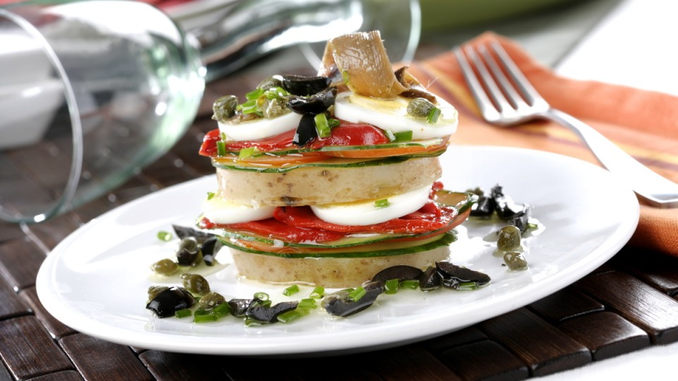

Lasaña de ensalada
Asi lo cocinamos
En un cazo con agua hirviendo y sal cocemos las patatas. Cocemos también los huevos, por separado. Cuando se enfríen, cortamos las patatas en rodajas gruesas y los huevos en otras más finas, con cuidado de que no se rompan.
Cortamos también en rodajas finas los tomates y el pepino y desmenuzamos los pimientos del piquillo en trozos.
Montamos la lasaña poniendo como base una rodaja de patata, sobre ella colocamos una rodaja de pepino, una de tomate, unos trozos de pimiento y huevo cocido y repetimos de nuevo con otra capa de cada ingrediente, comenzando por la patata. Terminamos colocando encima una anchoa y un poco de cebollino y aceitunas negras cortados finamente.
Rociamos nuestra lasaña con aceite de oliva, sal y vinagre de Módena.Trucos y consejos
Podemos acompañar este plato con una salsa mayonesa ligera
Informacion Nutricinal
Los vegetales de esta lasaña nos aportarán gran cantidad de vitaminas, minerales y fibra, así como sustancias antioxidantes, presentes en el tomate y muy beneficiosas para el organismo. Las patatas, por su parte, son una fuente importante de hidratos de carbono y el huevo añade a esta receta un aporte importante de proteínas y algunas grasas.